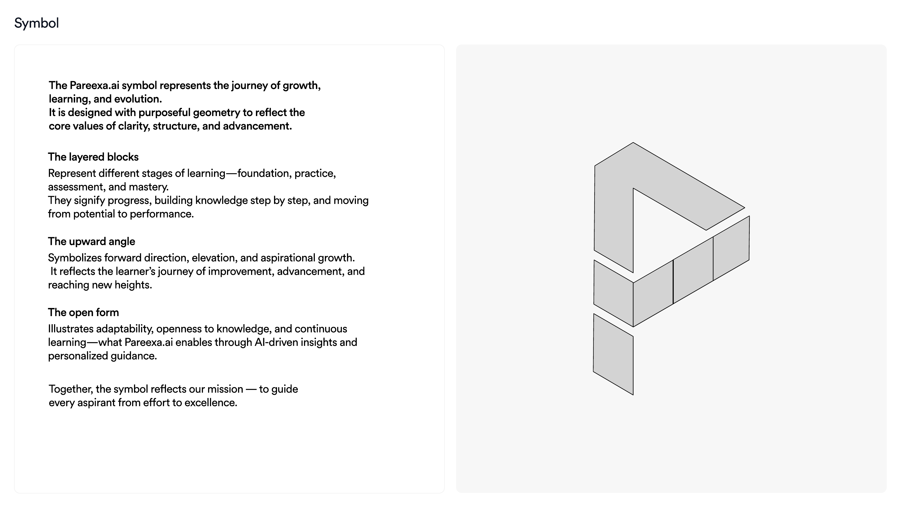
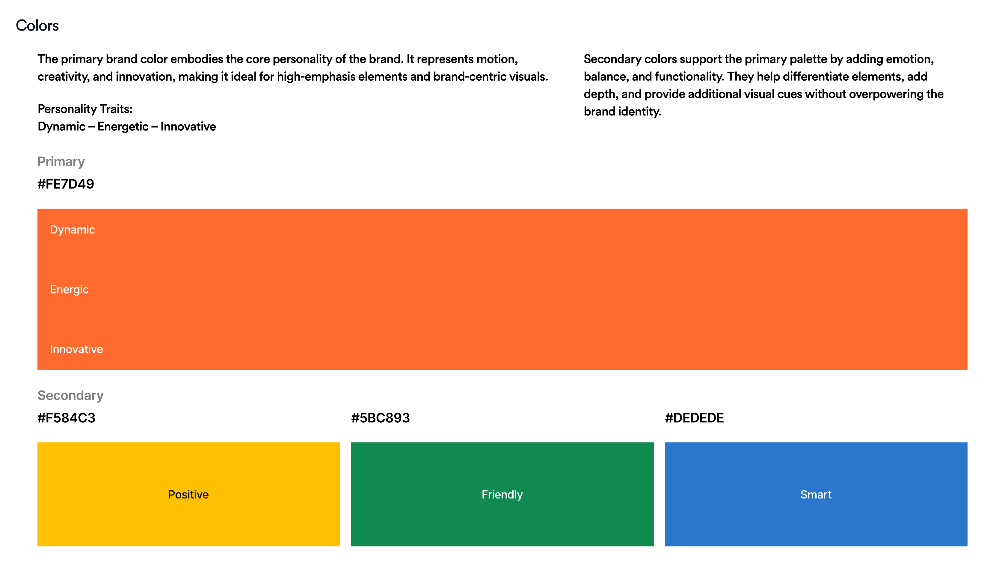
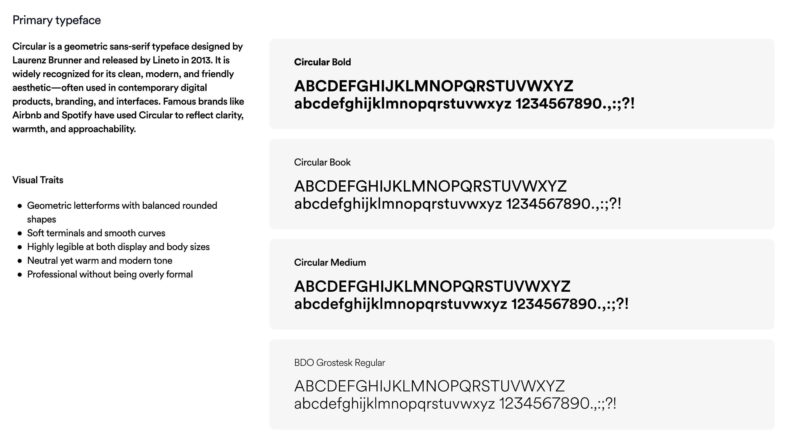
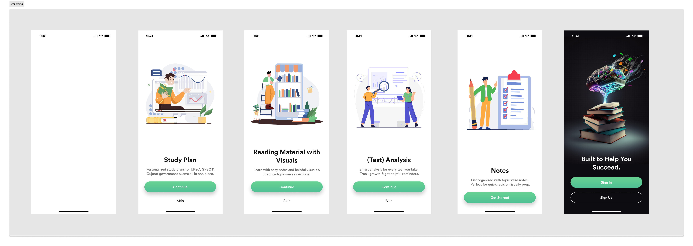
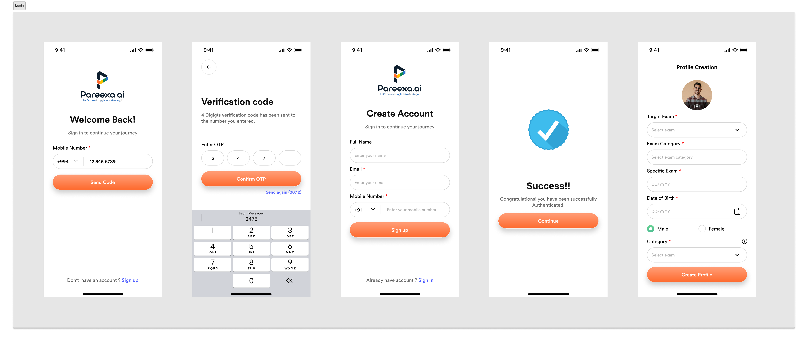
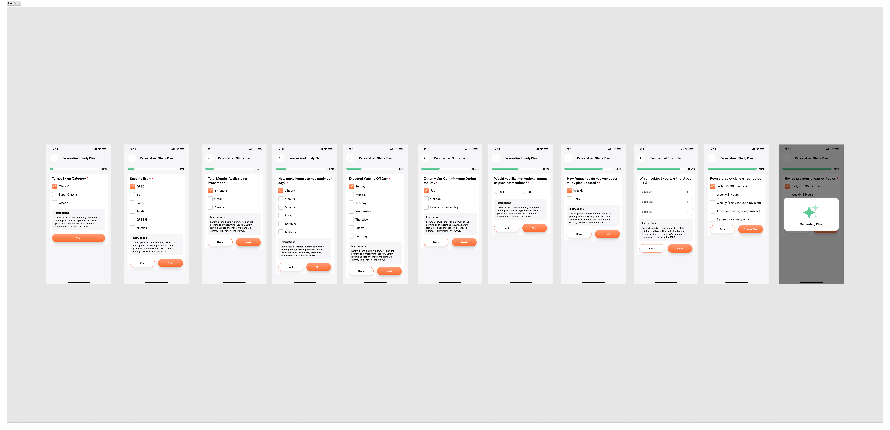
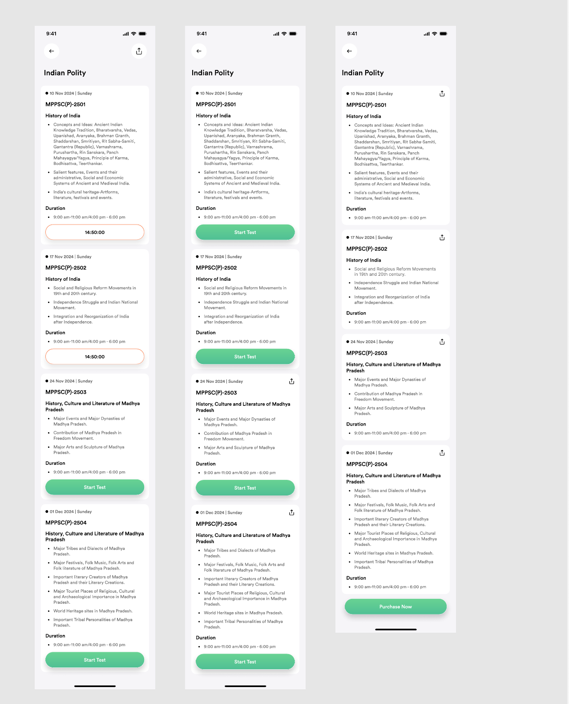
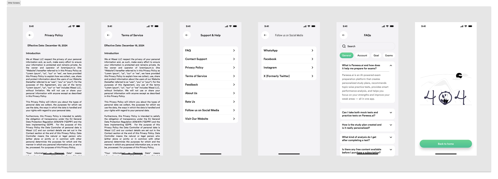
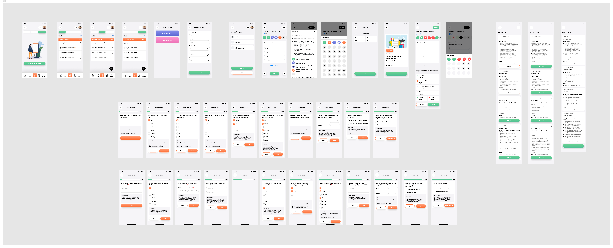
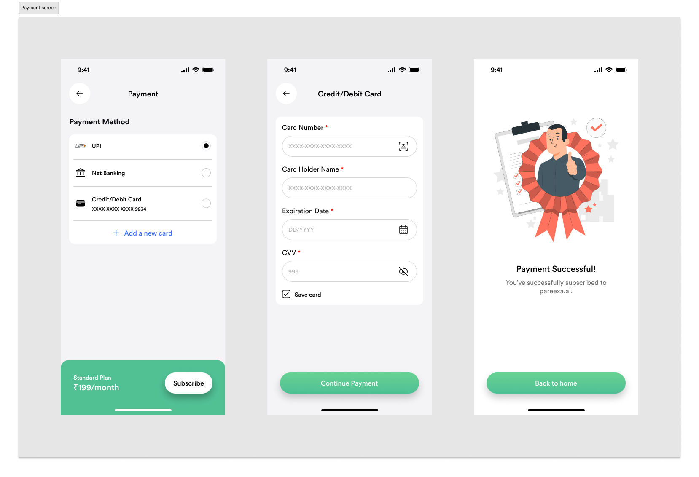

About the project
Aspirants preparing for UPSC, GPSC, MPPSC and other government exams were switching between apps for planning, study material, mock tests, current affairs and progress tracking. Pareexa.ai brings that whole journey into one connected ecosystem.
The challenge for this early-stage startup was turning a genuinely AI-driven learning engine into something aspirants could trust and use every day, without it feeling like an unpredictable black box.
- Core modules: planning, study, PYQs, tests, analytics, notes, AI and more
- 15+
- Mobile screens across onboarding, learning, feedback and payments
- 40+
My contribution
- Led end-to-end product design across the mobile experience.
- Defined the information architecture for 15+ interconnected modules.
- Designed 40+ screens covering onboarding, planning, study, testing, analytics and AI.
- Established the visual language and a scalable design system.
- Worked with the founders to turn the business vision into an MVP-ready product strategy.
Research
Aspirants were stuck with fragmented resources, weak planning, poor visibility and little personal guidance.
- Learning resources were scattered across many disconnected surfaces.
- There was no strong planning system to build consistency.
- Performance visibility and analytics were shallow.
- Motivation dropped because progress and next steps were unclear.
Three very different preparation realities
| Persona | What they need |
|---|---|
| Rahul UPSC aspirant, full-time learner | Structure for a long syllabus, daily clarity on what to study next, and a link between mock scores and revision. |
| Priya GPSC aspirant, consistency-focused | Topic-wise progress, previous-year questions inside the study flow, and confidence she’s improving. |
| Kunal Working professional, limited time | Focused plans that respect his time, quick practice loops, and smart recommendations instead of exploring. |
Personas came from structured conversations with the founders about aspirant behaviour, plus secondary research into UPSC/GPSC prep habits. Given the advisory scope, these weren’t formal user interviews.
Early low-fidelity wireframes
Before any visual design, I roughed out onboarding, planning and study/test flows to validate structure and navigation against the personas: eight screens from first launch to a completed mock test.
Pareexa.ai
AI-Powered Exam Success
Adaptive Learning Paths
Skip
Create Account
Start your journey to civil services
Already have an account?
Personalized Plan
Step 3 of 9
Target Exam Category
Hello, Pranav
UPSC Prelims in 142 days
Daily Streak
12 Days
Questions
1,240
Today's Task
Sectional Mock: History
Upcoming Mocks
GS Full Mock 1
GS Full Mock 2
Study Plan
Today's Subjects
Polity & Governance
70%
Economics
30%
Mock Test
12:45
Q 4 of 20
Which Fundamental Right is available only to citizens of India?
Test Complete
15 / 20
Correct
15
Wrong
3
Skipped
2
One ecosystem, not isolated tools
The vision was to guide learners from confusion to confidence. Instead of jumping between planners, notes, test tools and content, everything lives in one system. The principles were clarity, motivation, personalization, feedback and accessibility: copy, progress and next steps stay supportive rather than punitive, easing the anxiety of a long, high-stakes syllabus.
- Discover
- Register
- Plan
- Learn
- Practice
- Analyze
- Improve
Structure and goals
The information architecture runs Authentication → Dashboard → Study → Tests → Notes → AI Assistant → Profile → Subscription, with the study planner, reading, notes, AI assistant, analytics, mock tests, current affairs and payments around one core.
Design goals
- Reduce cognitive overload
- Improve learning consistency
- Encourage daily engagement
- Make progress measurable
Post-launch metrics
- Daily active users
- Test completion rate
- Subscription conversion
- Study plan adherence
The metrics were defined with the founders as the tracking framework for after launch, not results measured to date.
The brand system reinforced the promise
- Personality. Dynamic, energetic, innovative, friendly and smart, with a learning-first tone built on clarity and growth.
- Colour. Primary orange #FE6A2E, with black #111111, white and a wider UI palette for positive, friendly and smart moments.
- Typography. Circular for warmth and clarity, with Inter for readability across dashboards, forms and mobile.
- Orange #FE6A2E
- Black #111111
- White #FFFFFF






Designing AI people could trust, not just use
The challenge wasn’t adding AI. It was helping learners understand why they got a recommendation, and feel safe relying on it.
In a high-stakes exam journey, nobody trusts a system that changes their plan without explanation. So instead of a separate chatbot, AI was embedded across the journey wherever it could give contextual guidance.
- Explain recommendations. Every AI study plan was built from what the learner had shared (exam, timeline, available hours, strengths and weak subjects), so it read as personal rather than random.
- Keep users in control. Suggestions were editable: learners could change study hours, reorder subjects or move revision, so AI assisted rather than decided.
- Show up at the right moments. During planning, after mock-test analysis, when spotting weak topics and when suggesting the next session. Not everywhere.
- Reduce cognitive load. One clear next action instead of several competing suggestions.
Treating AI as contextual decision support kept the experience transparent, predictable and aligned with how aspirants already prepare.
Preparation as one guided journey
The ecosystem works as a learning loop, not a feature list. Modules are grouped by where a task sits in the prep cycle, not by how the codebase is split, and each has one job: reduce setup friction, build consistency, support focused study, simulate exam pressure, surface feedback and guide the next step.
- Onboarding: introduce value quickly and move into personalization with little friction.
- Planning: turn big exam goals into weekly and daily routines that feel achievable.
- Study: connect reading, video, notes and PYQs in one productive flow.
- Tests: mock tests and practice loops that build pressure, repetition and confidence.
- Analytics: accuracy trends and weak spots that point revision in the right direction.
- Improvement: insights, AI help and revision support that turn feedback into action.
Onboarding and setup
Illustrated intro screens communicate value quickly, introducing planning, reading and structured preparation before asking for commitment. Sign-up and profile setup then capture exam, category and learner details so plans and content are personal from day one.




Study planning
The planner breaks preparation down from yearly to monthly, weekly and daily. AI-generated, exam-specific schedules make the system feel like it adapts to the learner, and visible progress makes planning a confidence-builder rather than admin work.


The study experience
Multilingual reading with highlights, notes, translation and previous-year questions keeps learners in one flow. Text, video and references support different study styles, and a recommendation engine suggests courses, topics and personal paths.




The interactive prototype is walkable end to end: onboarding, planning, study, tests, notes and analytics.
Open full screen in Figma ↗Testing without confusion
Mock, subject and practice tests and full simulations let users build tests flexibly while still feeling a real exam. Instructions make time limits, negative marking and question count explicit. During the test, timer, navigation, mark-for-review and question states were designed to keep cognitive load down.


Review and analytics
- Review: correct answers, explanations, time analysis and difficulty show not just what was wrong, but why.
- Question navigator: answered, unanswered and review states give a clear picture of progress.
- Performance dashboard: SWOT, subject performance, trends, heatmaps, percentile, speed vs. accuracy and time analysis.
Performance is framed over time rather than as a one-off score, weaknesses are mapped by topic, and the long-term aim is guidance, not reporting: what to revise, what to repeat, what to improve next.
Notes, current affairs and the AI assistant
Notes support creation, search, tags and revision. Current affairs are curated for exam relevance. The AI assistant offers chat with suggested prompts like “Explain Article 21”, “Generate quiz” and “Create revision notes”, so nobody starts at a blank box.
AI Assistant
Always ready to help
Hello! I can explain complex UPSC topics or summarize current affairs.
Can you summarize 'Doctrine of Lapse'?
The Doctrine of Lapse was an annexation policy applied until 1858...
Current Affairs
G20 Summit 2024: Key Takeaways for India
New Economic Policy Reform Bill Introduced
Environmental Protection Act Amendments
Digital Rupee: Phase 2 Pilot Results
See More Articles
Notes
The 42nd Amendment Act added 10...
Focus on V-shaped recovery...
State-wise breakdown...
Payments and support
Plans run from free to monthly, quarterly, half-yearly and yearly. Payment is a clear sequence (plan, method, confirmation, success) across UPI, net banking and cards, with the plan summary always visible.


Profile covers exam preferences, purchased tests, referrals and notifications, while FAQ, help, privacy, terms, contact and feedback give the product the completeness of a real app, not a concept.
Iterations with the founders
1. Simplifying study plan creation
Before: one long questionnaire on a single screen covering exam, hours, revision, learning style and availability. In walkthroughs it felt overwhelming, like admin work before any value.
After: a guided multi-step flow with progress and short explanations, one decision at a time. Personalization now comes from smaller, focused choices, which lowers perceived effort.
2. Dashboard prioritization
Before: notes, tests, analytics, reading, AI and current affairs all had equal weight, so nothing told learners what to do next.
After: the dashboard is built around daily actions (today’s plan, the upcoming mock, the current streak and a progress summary), with everything else in secondary navigation. It became a decision-making hub, not a navigation hub.
3. AI recommendations
Before: several suggestions at once, which left people unsure where to start.
After: one prioritized, explained next step, like “Focus on Modern History today based on your recent mock performance in this topic”, instead of “Study History / Watch Video / Practice Questions / Revise Notes”. Clarity over quantity.
Constraints & trade-offs
Every decision balanced user value, implementation effort and launch priorities.
| Constraint | Trade-off |
|---|---|
| MVP timeline First release within a six-month engagement | The MVP focused on personalized planning, learning journeys, mock tests, analytics and contextual AI. Advanced coaching was deferred. |
| Limited user data No behavioural data before launch | Personalization used onboarding answers rather than history, so recommendations worked from day one. |
| Large feature surface Planning, learning, tests, analytics, AI, payments | Navigation follows the learner’s journey rather than technical modules. |
| Trust in AI Users expect predictable guidance | AI recommends, never decides: suggestions stay transparent and editable. |
Impact & lessons
Pareexa.ai is in pre-launch development. My role as Product Design Advisor was to set the design strategy, information architecture and design system ahead of release, so the impact here is design foundations, not usage data.
- Planning + learning in one structured system for routines and content.
- Testing + analytics that show progress, weaknesses and how to improve.
- AI + retention: smarter support, stronger personalization, more learner confidence.
It was a strong exercise in end-to-end ownership: designing for product scale rather than polish, balancing clarity with monetization and retention, building one reusable design language across modules, and treating analytics as a learning product, not a reporting screen.
What I took away
- Ecosystems beat feature collections. Learners think about passing an exam, not about modules.
- AI should reduce decisions, not create them. The best moments simplified the next action.
- Transparency builds trust. People adopt suggestions they understand and can adjust.
- Information architecture matters as much as interface. With 15+ modules, organizing around the workflow beat polishing screens in isolation.
Looking ahead
After launch, the priorities are to validate onboarding completion through usability testing, measure plan adherence, track AI recommendation acceptance, use behavioural data to improve personalization, and add adaptive revision planning based on long-term trends.